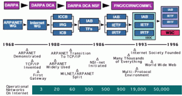

The World Wide Web was invented by Tim Berners-Lee in 1989 while working at CERN. His vision was to create a system that allowed researchers to share information more easily. He developed three fundamental technologies:
Reference: CERN. (n.d.). The birth of the Web.
After its release, the Web quickly expanded with the launch of Mosaic (1993), the first graphical web browser, followed by Netscape Navigator (1994). Microsoft entered the scene with Internet Explorer in 1995, leading to the "browser wars."
Reference: Leiner, B. M., Cerf, V. G., Clark, D. D., Kahn, R. E., Kleinrock, L., Lynch, D. C., ... & Wolff, S. (2009). A brief history of the internet. ACM SIGCOMM Computer Communication Review, 39(5), 22-31.
The early 2000s saw the rise of user-generated content with social media platforms like Facebook (2004) and YouTube (2005), alongside the growth of e-commerce and blogging.
Reference: O'Reilly, T. (2005). What is Web 2.0?
Current web trends include mobile-first development, the rise of Progressive Web Apps (PWAs), and AI integration. Technologies like virtual reality (VR) and augmented reality (AR) are also being integrated into web experiences.
Reference: Google Developers. (2021). Progressive Web Apps.
The future of the web could involve Web3 and decentralization, with users having more control over data, along with breakthroughs in AI, 5G, and quantum computing.
Reference: Szabo, S. (2020). Decentralized Web: What is Web 3.0 and why is it important? Medium.
Key browsers include Mosaic (1993), Netscape Navigator (1994), Internet Explorer (1995), Mozilla Firefox (2004), and Google Chrome (2008), which is now the dominant browser.
Phishing is one of the most common types of cyberattacks where attackers trick individuals into disclosing sensitive information, such as passwords or credit card details, by pretending to be legitimate institutions.
History of the World Wide Web
1. Inception of the World Wide Web (1989-1993)
2. Growth of the Web (1993-2000)
3. Web 2.0 Era (2000s)
4. Current Trends (2020s)
5. Future Possibilities
6. Browser History
Security Issues on the World Wide Web and the Broader Internet
1. Phishing
Reference: Anti-Phishing Working Group (APWG). (2021). Phishing activity trends report.
Malware refers to any malicious software that can compromise computer systems, including:
Reference: Kaspersky. (2021). What is ransomware?
Cross-Site Scripting (XSS) is a vulnerability commonly found in web applications. It allows attackers to inject malicious scripts into web pages viewed by other users. These scripts can be used to steal session tokens, manipulate the website’s content, or redirect users to malicious websites.
Reference: OWASP Foundation. (2021). Cross-site scripting (XSS)
SQL Injection is a code injection technique where attackers insert malicious SQL queries into input fields, manipulating the backend database. This can lead to unauthorized access to sensitive data, including usernames, passwords, and financial records.
Reference: OWASP Foundation. (2021). SQL Injection
Man-in-the-Middle (MITM) attacks occur when attackers intercept communications between two parties, such as a user and a website, and can alter the communication or steal data. Common MITM attack methods include:
Reference: Symantec. (2021). Man-in-the-Middle (MITM) attacks
A Distributed Denial of Service (DDoS) attack involves overwhelming a web server or network with a flood of internet traffic, causing it to slow down or become completely inaccessible. These attacks can severely disrupt online services and are often used as part of cyber warfare or as a distraction for other attacks.
Reference: Cloudflare. (2021). What is a DDoS attack?
A zero-day exploit refers to a previously unknown vulnerability in software or hardware that attackers can exploit before developers can release a patch. These vulnerabilities are particularly dangerous because they have no defense until they are discovered and fixed.
Reference: MITRE. (2021). Zero-day exploit
Data breaches occur when attackers gain unauthorized access to sensitive data, which can include personal information, financial records, or intellectual property. These breaches can be the result of hacking, insider threats, or inadequate security practices.
Reference: Identity Theft Resource Center (ITRC). (2021). Data breach reports
The increasing use of IoT devices (such as smart home gadgets, cameras, and connected medical devices) has expanded the attack surface for cybercriminals. Many IoT devices have weak security measures, making them easy targets for hackers to exploit. These devices can be compromised for data theft, surveillance, or as part of botnets for larger attacks.
Reference: Norton. (2021). Internet of Things (IoT) vulnerabilities
Social engineering refers to manipulative techniques used by attackers to trick individuals into giving up confidential information or access to systems. Common techniques include:
Reference: CISA. (2021). Social engineering attacks
In recent years, the use of mobile devices for browsing the internet has surpassed desktop usage. As of 2023, over 58% of global website traffic comes from mobile devices, making it critical for businesses to optimize their websites for smaller screens.
Reference: StatCounter. (2023). Mobile vs desktop market share
Mobile-first development is built around several core principles that aim to enhance user experience on mobile devices:
Reference: Marcotte, E. (2010). Responsive Web Design
A mobile-first approach ensures that users on mobile devices, which now constitute the majority of web traffic, have a seamless experience. This leads to higher engagement rates and better accessibility.
As Google now prioritizes mobile-friendly websites in its search rankings, mobile-first development can improve a site’s search engine optimization (SEO), leading to higher visibility in search results.
Reference: Google Developers. (2019). Mobile-first indexing best practices
Building a website with a mobile-first mindset can save time and money in the long run. Instead of designing a site for desktop and then making adjustments for mobile, starting with mobile ensures simplicity and efficiency.
Several tools and techniques are used to implement mobile-first strategies:
Reference: W3Schools. (n.d.). CSS Grid Layout Module
While mobile-first development has many advantages, it also presents challenges:
Reference: Smashing Magazine. (2020). Challenges of designing mobile-first websites
The shift towards mobile-first development reflects broader trends in user behavior, technology, and business needs. It ensures websites are accessible, fast, and easy to navigate on the devices people use most frequently.
Mobile-first development has become a foundational aspect of modern web design, and it is expected to remain vital as mobile technology continues to evolve. The future of web design will likely involve more integration with mobile-specific technologies, such as voice search, Augmented Reality (AR), and mobile payments, making mobile-first development not just a trend but a necessity.
In an era where mobile devices dominate internet usage, mobile-first development is crucial for delivering optimal user experiences and achieving success in modern web design. By prioritizing mobile devices from the start, developers can build responsive, fast, and user-friendly websites that work across all platforms, ensuring accessibility and high performance for everyone.

The Middle East has seen significant growth in internet usage over the past decade. As of 2023, approximately 72% of the region's population is connected to the internet. Some key trends include:
Reference: DataReportal. (2023). Digital 2023: Middle East
Mobile internet usage is particularly high in the Middle East, with 90% of internet users accessing the web via mobile devices. The growing reliance on mobile data has led to rapid 4G and 5G network expansion, particularly in countries like the UAE and Saudi Arabia.
Reference: GSMA. (2023). Mobile Economy Middle East and North Africa
Lebanon has experienced steady growth in internet connectivity, with approximately 84% of the population connected to the internet as of 2023. However, internet speeds and service availability have faced challenges due to economic conditions and infrastructure limitations.
Reference: DataReportal. (2023). Digital 2023: Lebanon
Social media usage in Lebanon is a major component of internet activity, with a high percentage of users engaging across platforms:
Reference: NapoleonCat. (2023). Facebook users in Lebanon
While internet penetration is high across much of the Middle East, there are still challenges to widespread, equitable access:
Reference: Internet World Stats. (2023). Internet usage in the Middle East
The Middle East, including Lebanon, has seen substantial growth in internet penetration and mobile usage over the past decade. While there are infrastructure challenges, especially in conflict-affected regions, the region's investment in mobile networks and social media usage underscores the internet’s growing importance. In Lebanon, connectivity issues persist, but efforts to improve internet speed and reliability remain crucial for future growth.